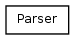

libWiiEsp
0.9.2
Página principal
Namespaces
Clases
Archivos
Lista de clases
Índice de clases
Jerarquía de la clase
Miembros de las clases
Jerarquía de la clase
Ir a la jerarquía textual de la clase

Todo
Clases
Namespaces
Funciones
Variables
'typedefs'
Enumeraciones
Generado el Martes, 19 de Julio de 2011 20:45:53 para libWiiEsp por
1.7.3
 1.7.3
1.7.3